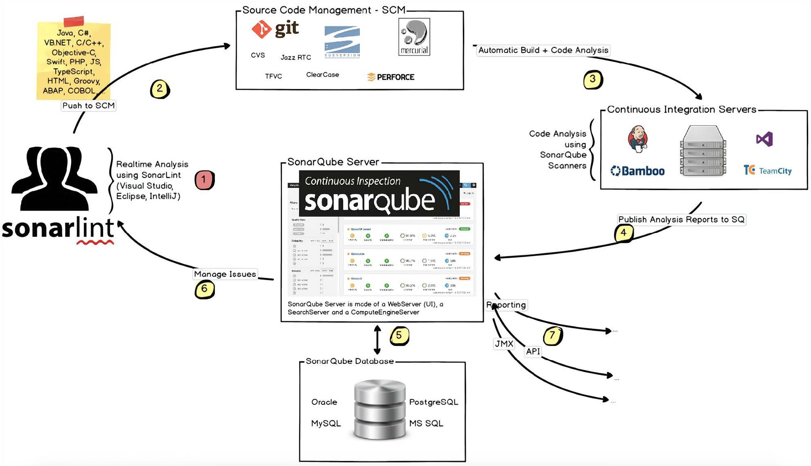
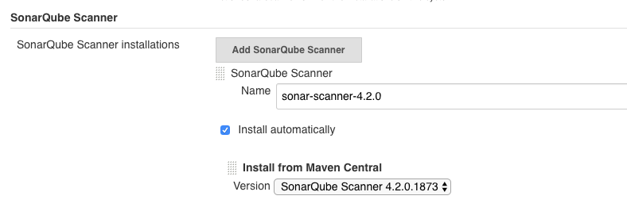
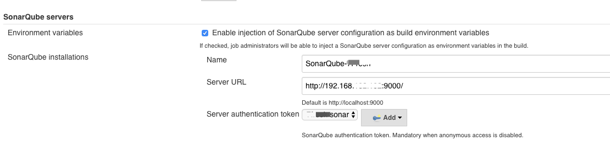
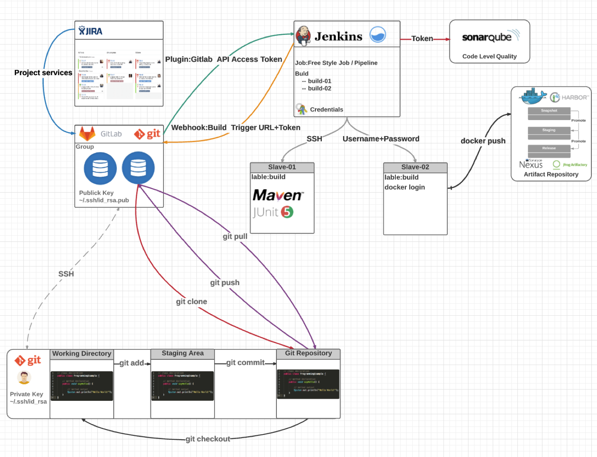

SonarQube 介绍
SonarQube 作为一个常见的开源代码质量平台，可以用来实现静态代码扫描，发现代码中的缺陷和漏洞，还提供了比较基础的安全检查能力。除此之外，它还能收集单元测试的覆盖率、代码重复率等。官方网站：http://www.sonarqube.org。
- 下载地址：https://www.sonarqube.org/downloads
- 支持25种以上的常见编程语言，如java、pyhton、go、c、JavaScript等。
- 插件化，便于后期功能扩展。
- 可视化展示代码分析结果。
SonarQube代码扫描流程：

SonarQube 平台实际包含两个部分：
一个是平台端，用于收集和展示代码质量数据，这也是我们比较常用的功能。
另外一个是客户端，也就是 SonarQube 的 Scanner 工具。这个工具是在客户端本地执行的，也就是跟代码在一个环境中，用于真正地执行分析、收集和上报数据。这个工具之所以不是特别引人注意，是因为在 Jenkins 中，后台配置了这个工具，如果发现节点上没有找到工具，它就会自动下载。你可以在 Jenkins 的全局工具配置中找到它。

了解了代码质量扫描的执行逻辑之后，我们就可以知道，对于 SonarQube 和 Jenkins 的集成，只需要单向进行即可。这也就是说，只要保证 Jenkins 的 Scanner 工具采集到的数据可以正确地上报到 SonarQube 平台端即可。
这个配置也非常简单，你只需要在 Jenkins 的全局设置中添加 SonarQube 的平台地址就行了。注意勾选第一个选项，保证 SonarQube 服务器的配置信息可以自动注入流水线的环境变量中。

在执行 Jenkins 任务的时候，同样可以针对自由风格的任务和流水线类型的任务，添加不同的上报方式。关于具体的内容，你可以参考 SonarQube 的官方网站，这里就不赘述了。
到此为止，我们已经实现了 GitLab、Jenkins 和 SonarQube 的打通。我给你分享一幅系统关系示意图，希望可以帮助你更好地了解系统打通的含义和实现过程。
